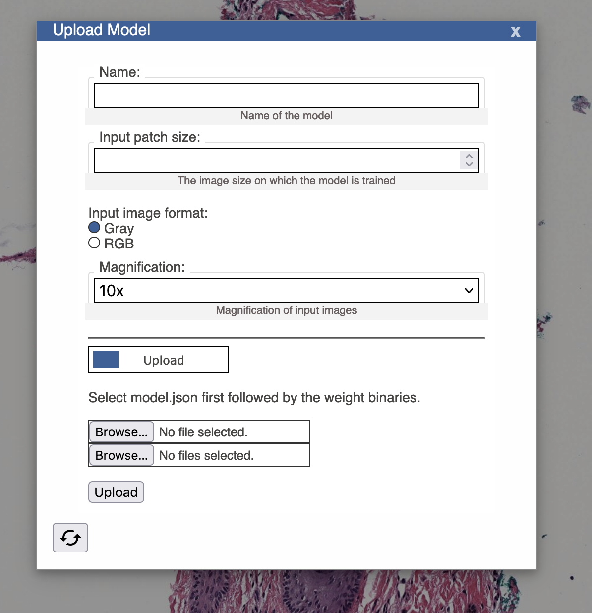
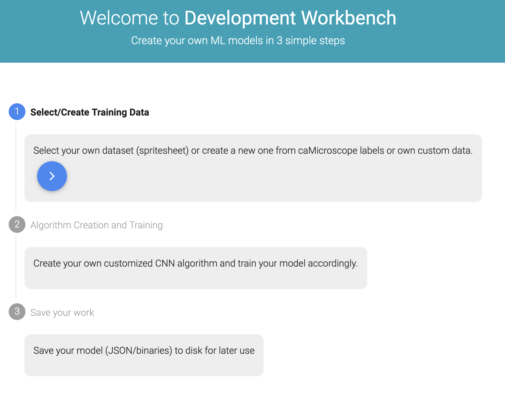

caMicroscope is a web-based whole slide pathology image and data viewer, with a strong emphasis on cancer pathology WSI (Whole Slide Imaging). This guide is designed for developers looking to extend caMicroscope through the addition of applications and through the use of machine learning models.
Extending caMicroscope
caMicroscope has a formalized way to add additional links from the viewer to other pages, internal or external. Link data is stored in mongo in the configuration collection, and an example is provided here (https://github.com/camicroscope/Distro/blob/0dee1948e09a1878e04d0f69311a3c771f02bde0/config/default_data.js#L228). These links may be configured to append the slide id from the viewer.
The most common way to extend caMicroscope is to include a custom app which consumes the slide id and adds some novel functionality. This involves adding a link to your app, as discussed above, as well as hosting the source alongside caMicroscope by editing the docker-compose deployment configuration (see next section).
Data associated with caMicroscope slides should be accessed from the Store object (https://github.com/camicroscope/caMicroscope/blob/master/core/Store.js).
Custom Deployments
caMicroscope uses docker compose to organize deployment configuration. A standard configuration is given in caMicroscope.yml (https://github.com/camicroscope/Distro/blob/master/caMicroscope.yml). Note the mounted file paths and environment variables for each service. Changing the compose file can be useful to do things like enable ssl or disable security. Additionally, other compose files are given for other common configurations, such as with pathdb or for development.
When working with a custom application, we recommend that you host its files with caMicroscope’s to avoid credential sharing and other browser security issues. In the caMicroscope.yml configuration, this is done by adding your files to /src/static/ within the back service.
The backend service has a configurable set of routes (https://github.com/camicroscope/Distro/blob/master/config/routes.json). This can be used to add handlers for new mongo collections or a proxy to another service within the configuration. Alternatively, a new service may expose another port. Please be aware of the limitations that this has due to browser security.
caMicroscope can be deployed with kubernetes using the `kompose convert` command. Further information on using Kubernetes with a docker compose file can be found on the Kubernetes site (https://kubernetes.io/docs/tasks/configure-pod-container/translate-compose-kubernetes/)
Models
caMicroscope has a prediction application and a segmentation application built in, which can use machine learning models. A small collection of compatible models can be found in the model repository (https://github.com/camicroscope/tfjs-models).

caMicroscope also has an experimental model development workbench for assisting in developing and training machine learning models for use in caMicroscope.

Model developers can export models by exporting to a tfjs format. Each machine learning application within caMicroscope provides users an option to add a model’s weights file and model specification json file to allow caMicrosope to use it. In most cases, this also requires that a user describe the input and output shape which the model uses. The following link can be useful in exporting an existing TFJS model to a compatible format: (https://www.tensorflow.org/js/tutorials/conversion/import_keras).